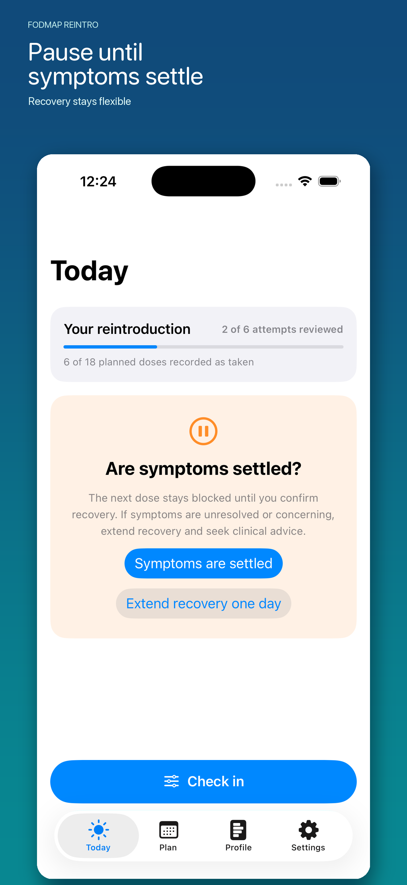
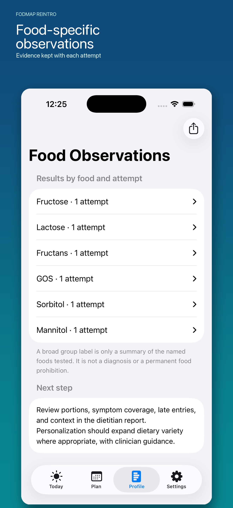
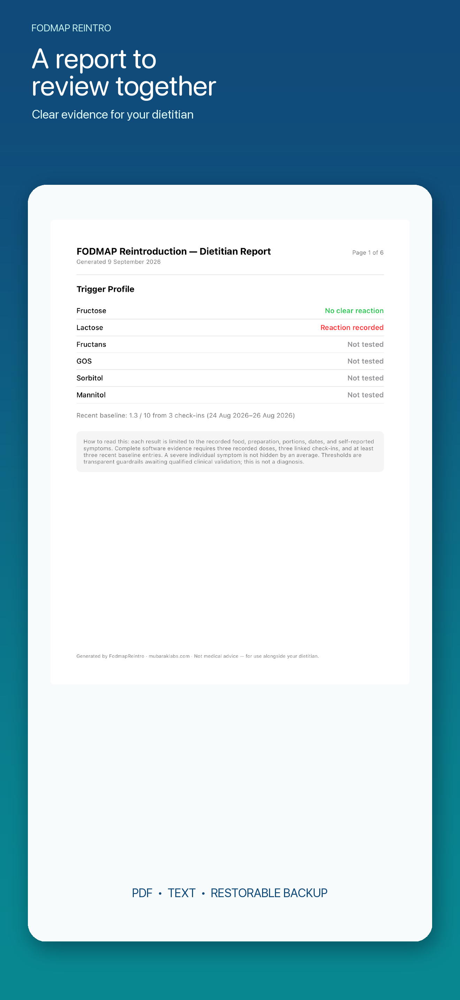

FODMAP Reintro: Gut Planner
Plan and log food challenges
Continue after elimination with a clear daily plan and a complete, food-specific record to review with your dietitian. Pause when symptoms have not settled, record what you actually consumed, and keep every observation together.
View on the App StoreWho it is for
FODMAP Reintro is for people preparing for or completing food reintroduction with a qualified dietitian. It is a planning and tracking aid—not medical advice, diagnosis, allergy guidance, a food database or an emergency service.
A flexible workflow
- Build a recent symptom baseline.
- Review the selected food, preparation and quantities with your dietitian.
- Record planned and actual quantities separately.
- Pause, skip, stop or extend recovery when needed.
- Review food-specific attempts and export a complete report.



Access and subscriptions
Preparation, baseline tracking, one complete challenge, history and exports are available without an active subscription. An entitlement is required for subsequent premium challenge work. Weekly and annual options may be offered; Apple shows your localized price, billing period and any introductory offer in the app, and determines offer eligibility. Your existing history and exports remain available after a subscription ends.
Your records
Symptom and plan data stays on your device unless you choose to export it. Create a printable PDF, a complete text report, or a restorable versioned JSON backup. Apple and RevenueCat process limited purchase and checkout data as explained in the privacy policy.
Support
For setup, purchase, restore, backup or report help, visit the FODMAP Reintro support page.